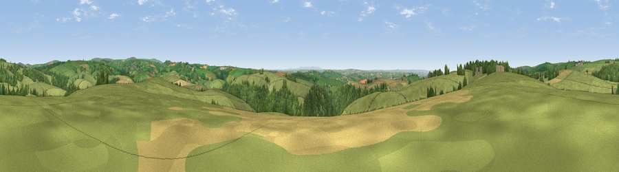

Viewpoint near Shirwell
#12302 in England · top 27% of its area beats it · near ShirwellWhere it is
The exact computed spot (SS 59725 36725). Click the marker for map links.
The view, rendered

A 360° render of this exact spot computed from the terrain model, tree cover and land cover — summer colours, afternoon light, calibrated against photographs of famous viewpoints. Real trees, hedges and buildings will differ in detail.
The panorama
Grey silhouette: terrain skyline in each direction (720 bearings, Earth curvature and refraction included). Dashed green: skyline with trees (+15 m) and buildings (+8 m) as obstacles. Blue strip: how far the ground is visible on each bearing.
Where the view opens
Wedge length = distance to the farthest visible ground on that bearing (vegetation-aware). Rings at 10, 25 and 50 km.
What fills the view
75% grassland · 19% woodland · 6% cropland
Angular shares of the visible panorama (visual magnitude), not map area. Landscape diversity 0.32 (0–1 Shannon).
Key numbers
More beautiful places nearby
The staircase of upgrades: each row has a higher view potential than everything closer. Driving times are estimates from straight-line distance, calibrated against real road routing — check an actual route before setting out.
| Place | Direction | Drive | Score |
|---|---|---|---|
| Viewpoint near Shirwell | WSW · 2 km | ~5 min | 60.8 |
| Viewpoint near Stoke Rivers | SE · 3 km | ~8 min | 66.4 |
| Viewpoint near Goodleigh | S · 4 km | ~9 min | 68.3 |
| Viewpoint near Landkey | S · 4 km | ~10 min | 69.5 |
| Viewpoint near Muddiford | NW · 5 km | ~10 min | 71.5 |
| Viewpoint near Landkey | S · 7 km | ~15 min | 74.0 |
| Codden Hill | S · 7 km | ~15 min | 81.3 |
| Viewpoint near Berrynarbor | NNW · 11 km | ~20 min | 81.8 |
51.11260, -4.00535 · source: screening · position refined by local search. Computed location — check access rights before visiting.